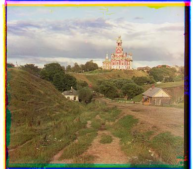
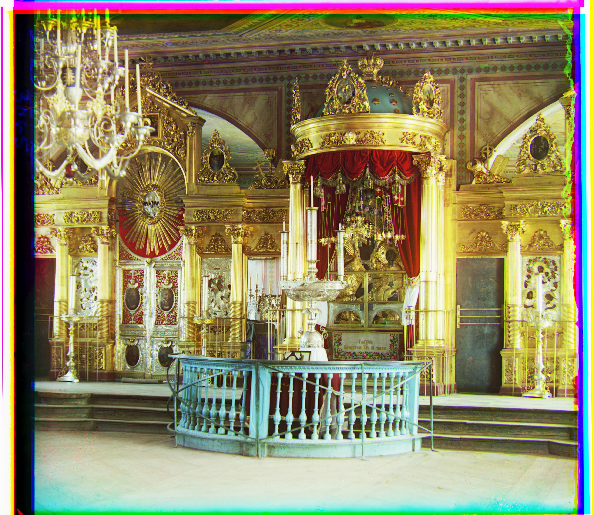

DISCLAIMER: I use the pronoun we, as I'm used to using the pronoun we for writing papers. Of course the project was completed only by myself.
Sergei Mikhailovich Prokudin-Gorskii (1863-1944) was a man well ahead of his time. Convinced, as early as 1907, that color photography was the wave of the future, he won Tzar's special permission to travel across the vast Russian Empire and take color photographs of everything he saw including the only color portrait of Leo Tolstoy. And he really photographed everything: people, buildings, landscapes, railroads, bridges... thousands of color pictures! His idea was simple: record three exposures of every scene onto a glass plate using a red, a green, and a blue filter. -- [copied this paragraph from project website]
In this project we try to combine his pictures and try to reconstruct the colors based on the images with the different filters he made.
First we extract the three color channels from the .jpg / .tif files. This is simply done by splitting the input image in 3 same size images, as every file contains the three different channels with those images stacked on top of each other.
For the .jpg scale we can directly try to align the images.
First we need a metric to compare the similarity of two images. As suggested in the project description we use Euclidian Distance (ED) and Normalized Cross-Correlation (NCC). We used the formulas given in the project description. EU is calculated as follows: sqrt(sum(sum((image1-image2).^2))). NCC is calculated as follows: (image1./||image1|| and image2./||image2||)
Now, we can search for the best alignment of two images. Those two images are the images of two color channels e.g. blue and green. To do so we define a displacement range for x and y direction. As range, we use the suggested range of from -15 to the left/bottom to 15 pixels to the right/top. Also, we crop images a bit so they do not have a boarder. This avoids noise and leads to better result when running the algorithm.
For each combination of displacement of x and y (e.g. 1 pixel to the left and 1 pixel to the top), we then calculate the similarity score as outlined earlier.
As we are interested in the shift which yields the best score (low / high depending on the metric), we save the shift amount of x and y and then finally return the shifted image.
In the end, we just align the red and the green image with the blue color channel and then stack those images on top of each other.
For larger images the single-scale method is not feasible as iterating over a large range of displacements gets computationally expensive. As suggested, we therefore implement an image pyramid.
The idea of the image pyramid usage is, that we downsize the image multiple times. Now, for each image size, which we will call level, we run our align algorithm. However, we now only search inside a smaller search space. As displacement range we use only -4 to 4 for x and y. We can do so, as we run our algorithm on each level and shift the image incrementally while passing through the different levels. Overall, we save computational power as a result. The code for the image pyramid can be found in the _imagepyramid function.
We implement an automatic adjustment of the contrast by normalizing the individual color channels, and we also implement a white balancing which additionally normalizes the image by the average color values to neutralize color balance. This implementation can be found in the functions _adjust_contrast_ and _white_balance_.
Down below can be found some results. The program can be configured to use NCC or ED as well as whether to apply white balance and adjust contrast.
Further results can be found in \code\output
Method: ED without white balance or adjustment of contrast 
Method: NCC without white balance or adjustment of contrast
Method: ED with white balance or adjustment of contrast

Method: NCC with white balance or adjustment of contrast

Conclusion: As we can see, neither the method, nor whether we apply white balance and adjust the contrast changes the image by much.
Method: ED without white balance or adjustment of contrast

Method: NCC without white balance or adjustment of contrast

Method: ED with white balance and adjustment of contrast

Method: NCC with white balance and adjustment of contrast 
Conclusion: Here we can see a very small difference between the unmodified and the picture where white balance adjustment and a contrast adjustment has been applied. The dark gold in the latter image is a bit more pronounced. However, the difference still is negligible
Overall there is almost to none difference between all the images in regard to the similarity score used and whether white balance is applied or not.